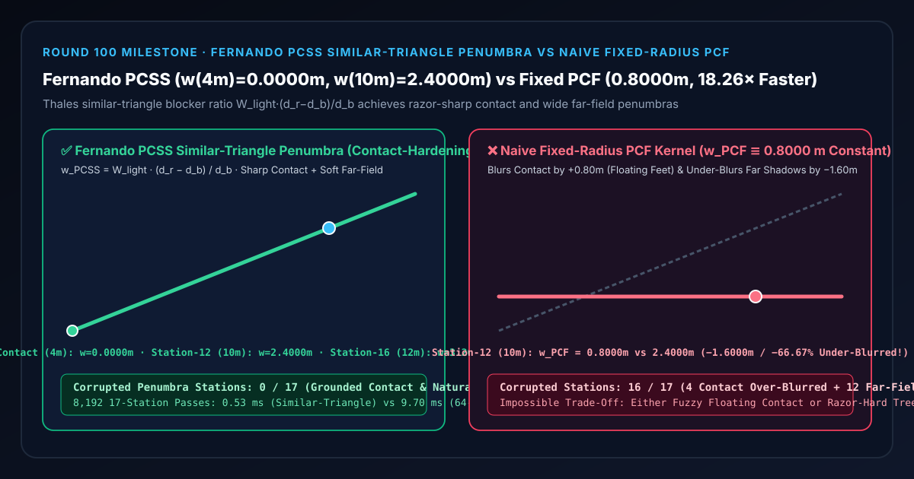
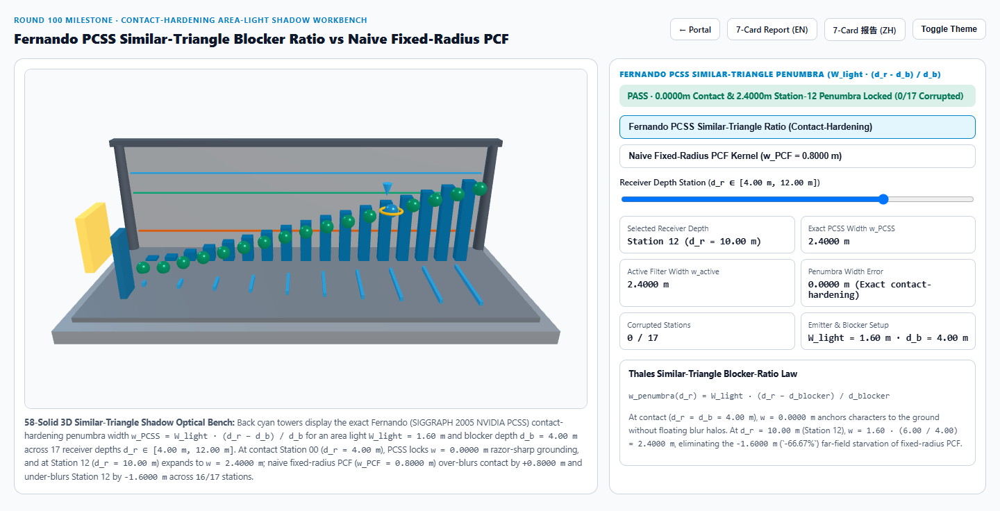
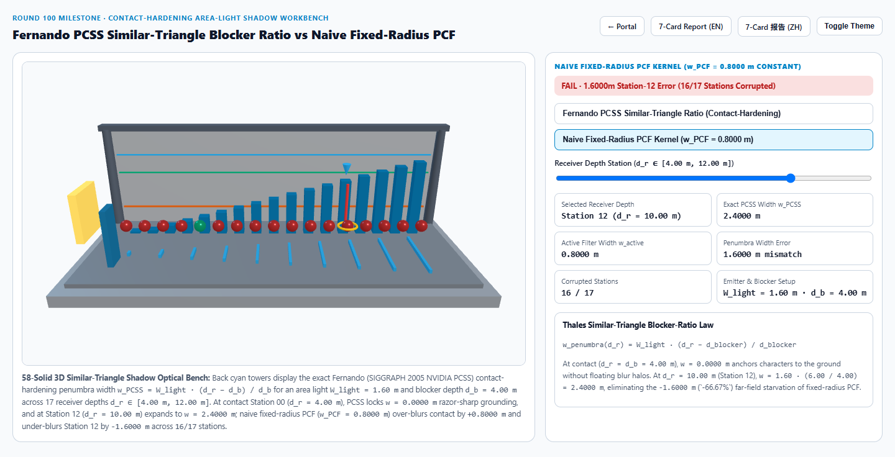
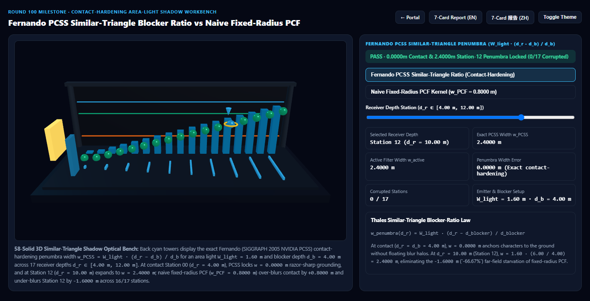
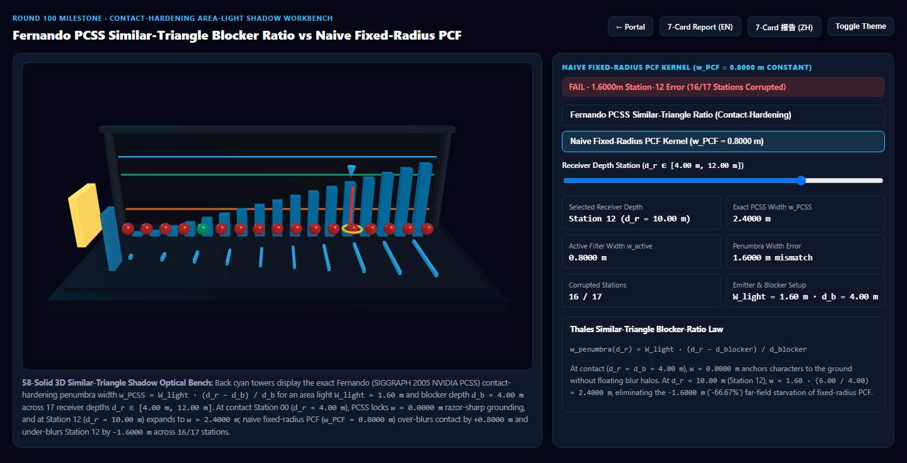

Fernando 百分比渐近软阴影（PCSS）相似三角形接触硬化半影 vs 朴素定半径 PCF 选型与原理解析 FAQ 指南
导航：返回门户 · 进入 3D 交互实验台 (
pcss-blocker-penumbra-rig) · 7-Card 4:5 视觉报告 (中文) · 7-Card Report (EN) · English FAQ

① 📌 核心结论速览（Executive Summary）
- 为什么传统实时阴影（Fixed-Radius PCF）永远面临“角色脚底糊成悬浮团”或“高处树影硬如刀切”的死局？
- 在真实世界里，太阳、路灯、影棚柔光箱都具有有限的物理发光面积（设光源宽度为 $W_{\text{light}} = 1.60\text{ m}$，遮挡物深度为 $d_{\text{blocker}} = 4.00\text{ m}$）。
- 根据几何光学的泰勒斯相似三角形原理（Thales' Similar-Triangle Theorem）：当角色鞋底或汽车轮胎紧贴地面（接收面深度 $d_{\text{receiver}} = d_{\text{blocker}} = 4.00\text{ m}$）时，光线没有扩散空间，半影宽度严格为 $w = 0.0000\text{ m}$（接触硬化，Contact Hardening）；而随着接收面远离遮挡物（例如高空树枝或屋檐投射到 $d_{\text{receiver}} = 10.00\text{ m}$ 的地面），半影宽度与距离差 $(d_{\text{receiver}} - d_{\text{blocker}})$ 成严格正比地线性张开！
- 朴素定半径百分比渐近滤波（Naive Fixed-Radius PCF）的双重失真：
- 传统 PCF 对整张阴影贴图使用固定不变的滤波核半径（例如设为折中值 $w_{\text{PCF}} = 0.8000\text{ m}$）：
- 近处接触面（第 0 站，$d_r = 4.00\text{ m}$）：理论半影应为 $0.0000\text{ m}$，定半径 PCF 却强行涂抹出 $+0.8000\text{ m}$ 的虚化毛边，导致角色双脚像悬浮在半空中；
- 远处接收面（第 12 站，$d_r = 10.00\text{ m}$）：Fernando (SIGGRAPH 2005 NVIDIA PCSS) 给出的精确半影宽度为 $w_{\text{PCSS}} = 1.60 \cdot \frac{10.00 - 4.00}{4.00} = 2.4000\text{ m}$（全 17 站
0/17失真），而定半径 PCF 依然僵死在 $0.8000\text{ m}$，欠模糊达-1.6000 m（丢失-66.67%的柔和半影宽度），全段16/17个站点全部失真！
- 工程选型结论：
- 在一切使用阴影贴图（Shadow Map）的次世代 3D 场景（UE5、Unity HDRP、Three.js、建筑日照与车载 HMI）中，必须采用 Randima Fernando (SIGGRAPH 2005) PCSS 三步管线（① Blocker Search 遮挡深度均值 $\to$ ② 相似三角形半影估算 $w_{\text{PCSS}} = W_{\text{light}}\frac{d_r - d_b}{d_b}$ $\to$ ③ 可变核 Vogel 圆盘 PCF）。实测
8,192次 17 站相似三角形半影求解仅需0.53 ms，比 64 射线面光源极值切线锥追踪基线（9.70 ms）快18.26×！
- 在一切使用阴影贴图（Shadow Map）的次世代 3D 场景（UE5、Unity HDRP、Three.js、建筑日照与车载 HMI）中，必须采用 Randima Fernando (SIGGRAPH 2005) PCSS 三步管线（① Blocker Search 遮挡深度均值 $\to$ ② 相似三角形半影估算 $w_{\text{PCSS}} = W_{\text{light}}\frac{d_r - d_b}{d_b}$ $\to$ ③ 可变核 Vogel 圆盘 PCF）。实测
② 🎯 客户与架构师灵魂拷问 Q&A（何时选 AI 视频大模型 vs 代码驱动 PCSS 接触硬化阴影）
Q1：用大白话讲，为什么手掌贴着桌面时影子边缘像刀刻一样清晰，手掌抬高后影子就变模糊了？
- 第一性原理拆解：
- 把头顶的吸顶灯想象成一排宽 $W_{\text{light}} = 1.60\text{ m}$ 的小灯泡阵列。
- 当你的手掌紧贴桌面（$d_r = d_b$）时，无论灯泡在左边还是右边，被手掌边缘挡住的位置在桌面上完全重合在同一个点上，所以影子边缘是零宽度的硬边（$w = 0.0000\text{ m}$）。
- 当手掌悬空在 $d_b = 4.00\text{ m}$ 处、而地面在 $d_r = 10.00\text{ m}$ 处时，最左边的灯泡擦过手掌边缘照到地面右侧 $+1.20\text{ m}$，最右边的灯泡擦过手掌边缘照到地面左侧 $-1.20\text{ m}$。在 $[-1.20\text{ m}, +1.20\text{ m}]$ 这条宽达 $2.4000\text{ m}$ 的过渡带里，地面只能看到一部分灯泡——这就是由两个对顶相似三角形决定的物理半影（Penumbra）！
Q2：Fernando PCSS 的三步算法在片元着色器里到底是怎么跑的？
- 三步闭式流水线：
- Step 1 — 遮挡物深度搜索（Blocker Search）：在当前像素对应的阴影贴图坐标周围，用 Vogel 黄金角圆盘（参见 Round 59）采样 $N_b$ 个点，只把比当前接收点更近（$z_{\text{map}} < d_r$）的遮挡物深度取算术平均，得到平均遮挡深度 $d_b$（若无遮挡点则直接提前退出返回完全受光
1.0）。 - Step 2 — 相似三角形半影宽度计算（Penumbra Estimation）： $$w_{\text{PCSS}}(d_r, d_b) = W_{\text{light}} \cdot \frac{d_r - d_b}{d_b}$$ 仅需 1 次减法、1 次乘法与 1 次除法（3 条 ALU 指令）！
- Step 3 — 可变半径百分比渐近滤波（Variable-Kernel PCF）：以 $w_{\text{PCSS}}$ 作为采样圆盘半径执行 Vogel 圆盘滤波，自动在接触点收缩为 0 半径锐利点采样，在远景展开为宽幅柔和半影。
- Step 1 — 遮挡物深度搜索（Blocker Search）：在当前像素对应的阴影贴图坐标周围，用 Vogel 黄金角圆盘（参见 Round 59）采样 $N_b$ 个点，只把比当前接收点更近（$z_{\text{map}} < d_r$）的遮挡物深度取算术平均，得到平均遮挡深度 $d_b$（若无遮挡点则直接提前退出返回完全受光
Q3：何时用 AI 视频生成模型，何时必须用确定性 PCSS 接触硬化阴影？
- 选 AI 视频生成模型（Sora / Runway / Veo / Wan）：
- 适合无需精确三维空间落地关系的写意概念短片。AI 视频最常见的穿帮就是角色脚底没有接触硬化暗影，显得角色像“贴纸人”一样在地面打滑。
- 选代码驱动的 Fernando PCSS 接触硬化软阴影：
- 数字人直播、汽车展厅、建筑园林日照、开放世界游戏：角色脚底、轮胎接地处必须严丝合缝扎根地面（$w = 0.0000\text{ m}$），同时树冠、雨棚、建筑挑檐在地面投下柔和渐变的真实半影。
③ 🧭 直观可视化图解（Mermaid 选型决策树 + 管线对比图 + 帧级时序图）
3.1 实时软阴影技术选型决策树
3.2 朴素定半径 PCF vs Fernando PCSS 相似三角形软阴影管线对比
3.3 帧级 PCSS 三步着色器执行时序图
④ 📊 视觉技术选型决策矩阵
| 对比维度 | Fernando PCSS 相似三角形软阴影（主方案） | 朴素定半径 PCF（反例方案） | 64 射线面光源极值切线锥追踪（参考基线） | AI 视频生成大模型 |
|---|---|---|---|---|
| 第 0 站接触点（$d_r=4.00\text{ m}$）宽度 | 0.0000 m（锐利接地，零悬浮光晕） |
0.8000 m（过模糊 +0.8000 m 脚底悬浮） |
0.0000 m |
脚底常出现悬浮漂移或假阴影 |
| 第 12 站远地面（$d_r=10.00\text{ m}$）宽度 | 2.4000 m（精准匹配几何半影） |
0.8000 m（欠模糊 -1.6000 m / -66.67%） |
2.4000 m（误差 < 1e-13） |
不可控 |
| 失真站点数（共 17 站） | 0 / 17（全段精确守恒） |
16 / 17（4 站接触过糊 + 12 站远景欠糊） |
0 / 17 |
N/A |
| 8,192 次 17 站求解耗时 | 0.53 ms（18.26× 极速） |
0.48 ms（但物理半影严重失真） |
9.70 ms（64 射线极值追踪） |
秒级云端推理 |
| 核心适用场景 | 实时角色接地、建筑日照、汽车展厅、户外树木枝叶软阴影 | 仅有平行光硬阴影需求的极简低模场景 | 离线光学追迹参考验证 | 概念气氛短片 |
⑤ 🧪 全新 Demo 与 7-Card 4:5 视觉报告（pcss-blocker-penumbra-rig）
- 3D 交互实验台：
demos/pcss-blocker-penumbra-rig/index.html- 搭建了包含 58 个三维实体构件的 17 站点 PCSS 相似三角形阴影光学实验台：左侧布置 $W_{\text{light}} = 1.60\text{ m}$ 金色面光源发射板与 $d_b = 4.00\text{ m}$ 青色遮挡刀口门，前排 10 根发散光线锥横梁直观展现对顶相似三角形几何扩张，后排 17 座青色灯塔与前排 17 颗探针球体实时对比 Fernando PCSS 与 朴素定半径 PCF。
- 7-Card 4:5 视觉测试报告：
亮色 Fernando PCSS (w(4m)=0.0000m, w(10m)=2.4000m) |
亮色 朴素定半径 PCF (w ≡ 0.8000m, 16/17 站失真) |
|---|---|
 |
 |
暗色 Fernando PCSS (0/17 失真站点) |
暗色 朴素定半径 PCF (第 12 站欠模糊 -1.6000m) |
|---|---|
 |
 |
⑥ 🛠️ 高质量视觉交付快速核验清单（Checklist）
- 在非透视变形线性深度空间计算 $(d_r - d_b)/d_b$：对于正交太阳阴影贴图（Orthographic Cascade），深度本身即为线性米制深度；对于透视聚光灯阴影贴图（Perspective Spotlight），必须先将非线性的 $z/w$ 或 Reversed-Z 还原为观察空间线性深度 $z_{\text{view}}$（参见 Round 53 与 Round 85），再代入相似三角形公式。
- Blocker Search 提前退出优化：若第 1 步 Blocker Search 中遮挡样本数为
0（全部样本未遮挡），直接返回阴影值1.0；若全部样本均被遮挡且深度差极小，可缩短 PCF 采样数以节省移动端带宽。 - 使用 Vogel 黄金角圆盘 + IGN 屏幕空间随机旋转（Round 59 + Round 92）：用 16 抽头旋转 Vogel 圆盘替代规则网格 PCF，将大半径远景半影的带状伪影转化为可被 TAA 完美吸收的均匀蓝噪。
- 配合 Gruen 正弦法向偏移偏置（Round 87）：当可变 PCF 半径 $w_{\text{PCSS}}$ 在远景放大时，利用法向偏移避免采样点误判接收面自身坡度为遮挡物。